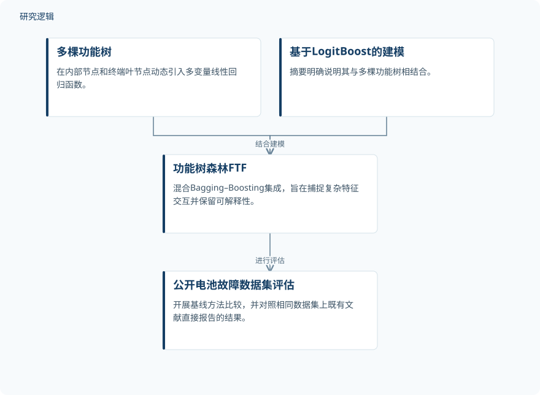

摘要解读
功能树森林：用于电动汽车电池故障诊断的袋装与提升混合集成学习方法
Functional Tree Forest: A Hybrid Bagging-Boosting Ensemble Machine Learning Approach for Battery Fault Diagnosis in Electric Vehicles
解读更新 2026-10-29 09:46 · 依据公开摘要整理，未核验全文细节
电动汽车电池故障诊断，既需要识别复杂特征之间的关联，也需要让模型判断具有可解释性。这项研究提出功能树森林（FTF），尝试以混合Bagging–Boosting集成兼顾分类准确率与解释性；阅读重点是其模型结构，以及不同类型性能比较的证据边界。
文章目录
电池故障诊断为何需要兼顾准确率与解释性
准确的电池故障检测与诊断，关系到电动汽车的安全、健康监测和运行表现。摘要指出，现有研究仍面临非线性特征交互限制分类准确率、模型可解释性不足等问题。因此，本文关注的不只是分类结果，也包括模型如何表达复杂特征关系。
把多变量函数引入树的内部节点与叶节点
FTF将多棵功能树与基于LogitBoost的建模相结合，形成混合Bagging–Boosting集成。不同于仅依赖轴对齐单变量属性划分的传统决策树，这一架构在内部节点和终端叶节点动态引入多变量线性回归函数，用于捕捉复杂特征交互。
作者将保留模型可解释性作为该方法的特点。不过，摘要没有展开集成的具体训练流程，也未说明解释结果如何呈现，因此不能仅据此进一步还原算法实现或判断解释质量。
依据摘要整理的FTF组成与评估关系


仅概括摘要明确报告的模型组成及公开数据集评估关系，不表示完整训练流程，也不是论文原图。
下载 SVG图示关系说明
实线表示相邻阶段的信息流，虚线表示跨阶段联系或反馈。
多棵功能树 → 功能树森林FTF：组成；基于LogitBoost的建模 → 功能树森林FTF：结合建模；功能树森林FTF → 公开电池故障数据集评估：进行评估
基线比较数值领先，文献比较需保留协议差异
研究在五个公开的电动汽车电池故障数据集上评估FTF。摘要报告，在与13种基线机器学习方法的比较中，FTF取得最高的数值准确率；这些基线涵盖线性模型、传统树分类器、集成方法和网络类架构。摘要未给出具体准确率、提升幅度或统计显著性。
研究还直接对照了使用相同数据集的既有先进研究所报告的结果。摘要将FTF的表现概括为具有竞争力，并明确指出，各研究采用的实验协议不同，性能差异幅度也随数据集变化。基线比较中的数值领先，不宜直接扩展为对既有文献的统一优越性结论。
摘要尚不足以界定样本覆盖与实际验证范围
仅凭摘要，无法判断各数据集的样本规模、故障类别分布、训练测试划分、调参方式及重复验证情况，也无法确认比较方法是否获得一致的优化条件。这些属于当前资料未报告的信息，并不意味着论文没有开展相关工作。
摘要同样不足以判断跨工况、跨车辆或实际部署条件下的泛化表现，以及可解释性是否经过独立评价。因此，当前结果应理解为所述公开数据集上的分类评估，不能直接等同于已验证的车辆安全收益或运维效果。
阅读启发：关注节点表达，也核对比较是否可比
阅读启发：对智能运维读者，这项研究值得继续追问的是，多变量节点函数如何表达电池特征之间的关系，以及这些关系如何转化为可理解的诊断依据。进一步阅读时，可重点核对解释方式、数据划分与比较协议，而不只关注准确率排名。
以上为本站阅读启发与建议，不是论文已验证的结论。